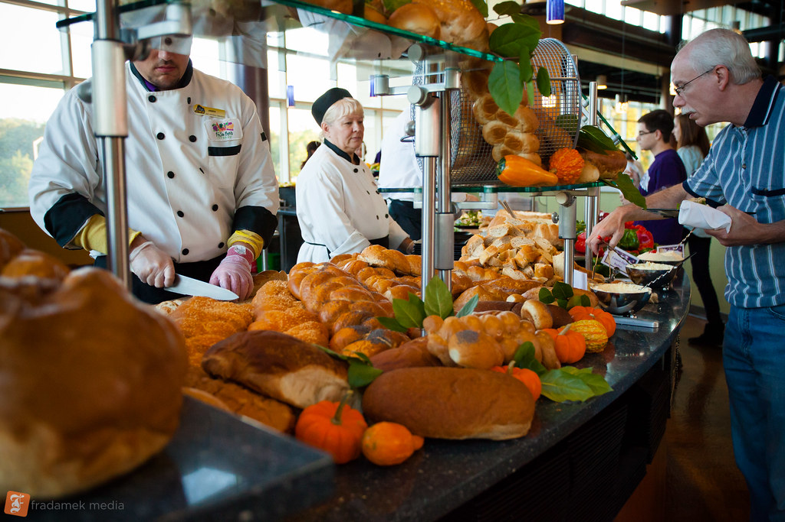

About JMU Dining
JMU students have a plethora of food options from which to choose, with 28 dining locations on campus. JMU provides flexible meal plans and plenty of options for individuals with food allergies and sensitivities. All of JMU’s dining services are managed by Aramark.
There are two buffet-style facilities on campus offering a rotating variety of food options, ranging from salad and pasta bars to sandwiches, pizzas, and ethnic cuisine.
At JMU Dining, we consistently strive to become more sustainable and efficient in our everyday operations. Our team consists of a sustainability coordinator and interns. Together, our goals are to increase sustainable food purchasing, to educate and empower the University and local communities, and to reduce our environmental footprint. In addition, we offer expertise and practical solutions to campus partners.
We strive to develop and implement long-term environmental stewardship programs and policies within the areas of sustainable food, responsible procurement, green buildings, energy and water conservation, transportation, and waste stream management.
For more information, visit JMU Dining's official website.